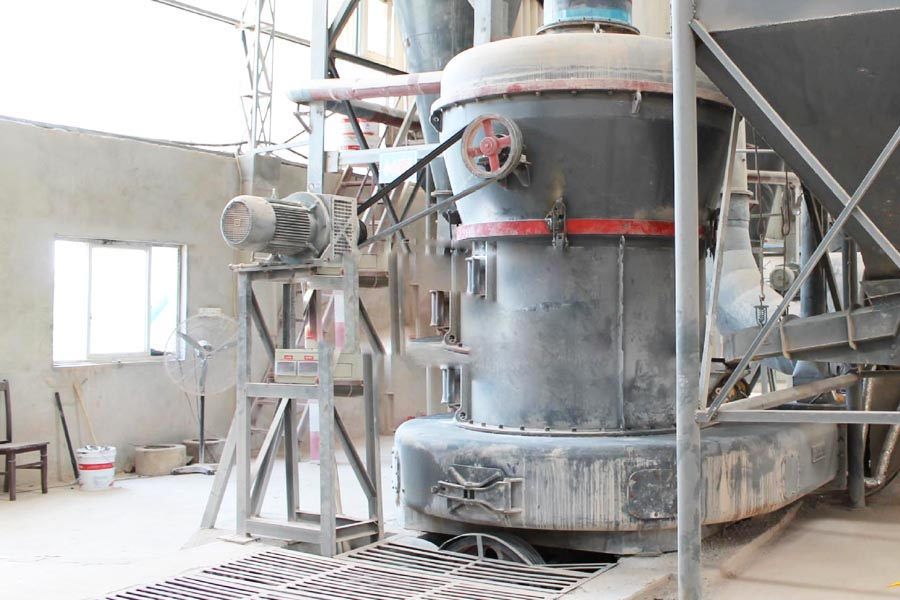

Construction waste crushing production line

Mobile construction waste crushing station for urban construction waste crushing.
marble granite processing plant
marble granite processing plant. How much equipment do marble, artificial marble what equipment; do a small amount of money for an artificial marble processing factory worker factory network in the world for you ... jaw crusher and cone crusher and other products, production crusher, new type? Raymond mill.
Marble crusher principle and marble grinder manufacturers details, what marble flour do better? How much marble ground into powder machine, marble is calcium carbonate as the main ingredient of the ore, and limestone, is an important raw material production of heavy calcium one.

The marble production line is of high automation, nearly no manual operation except for the equipment energy on, energy off and routine maintenance. It’s of It capabilities high efficiency, low operation cost, huge output, high rewards, and completed stones of uniform size and good-shaped. What?¡¥s more it meets the national high-speed material requirements. The project objective is always to setup a marble processing plant in Manshera. The plant would process (cut to predefined sizes and polish) raw marble blocks and create marble strips/tiles and slabs. The project would not only focus the construction industry and demand for marble within the location, but other parts of NWFP as well as Rawalpindi and Islamabad.
India marble processing plant supplier. Marble and Granite is included inside the list of largest minerals extracted among chromite, coal, rock salt, lime stone, china clay, dolomite, fire clay, gypsum, silica sand and so on.. In Manshera, there is a fantastic demand for a fully equipped marble processing plant. The new plant could not just explore the construction business within the region which is on a boom because past five years, but could also fulfill the orders from the adjoining locations. Finished goods include tiles, slabs and strips. The unit would have the100% capacity to process around 370,260 sq.ft. of marble The total capital expense in the project is Rs 18.410 Million. The main raw material is raw marble within the type of massive blocks or big rock. Raw granite is also processed. These are accessible in abundance in the N.W.F.P. The NWFP marble reserves constitute about 77% in the country’s total deposits. Out of 160 million tons of country reserve 158 million tons are in NWFP. 15 employees will probably be employed directly on the project. The civil works and installation of plant is estimated to complete in 06 months.
The project will probably be run to generate the very best quality marble items. Special care and high quality manage will be observed in finishing the marble goods, so that the export targets may be achieved. This can maximize the profits. The selection/purchase of raw marble is of immense importance. Expertise will be employed in the obtain of best top quality raw marble stone to ensure that there is certainly minimum wastage. xsm is really a expert stone crusher manufacturer in China, and has formed a complete product-chain that takes crushers and grinding mills as the primary goods, and vibrating screen, vibrating feeder and so on as supplementary goods. Now, our products have exported to many nations, like USA, Libya, South Africa, Vietnam, Indonesia, Philippines, Pakistan, Brazil, Egypt, Zambia etc, and received high popularity.
India marble processing plant price. Marble mill, milling equipment marble, marble mill price, marble Raymond mill, CAG Henan professional marble milling machine manufacturer, milling equipment, excellent quality marble and easy to maintain, more environmentally friendly, more marble mill price
Leave Me A Message, Now
If you have any questions regarding equipment prices, production line configuration or other problems, you can send a message to us, we will contact you soon.